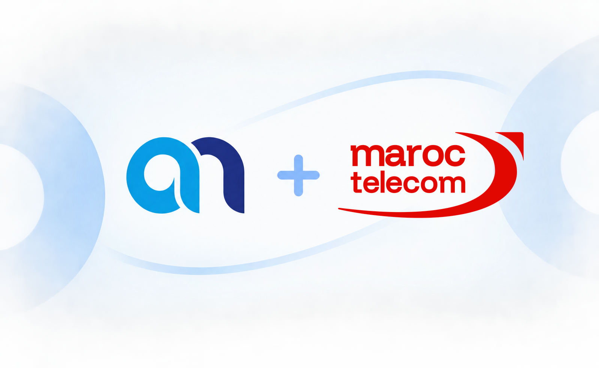

News · November 27, 2026 · by OpenAN

The OpenAN community is pleased to announce that Maroc Telecom (Itissalat Al-Maghrib – IAM) has joined the project as an ecosystem participant. Its experience running a live multi-vendor network and its participation in the TM Forum Catalyst on Agent-to-Agent collaboration (A2A-T) add a practical operator perspective to the community's work toward autonomous networks.
Maroc Telecom is Morocco's incumbent telecommunications operator, known historically as Itissalat Al-Maghrib (IAM). Its network brings together equipment from multiple vendors, including Huawei, Ericsson, and Nokia, and it is taking part in the TM Forum A2A-T Catalyst with a use case dedicated to multi-vendor RAN fault management. This blend of day-to-day multi-vendor operations and standards-driven agent collaboration shapes the outlook it brings to OpenAN.
Maroc Telecom intends to evaluate OpenAN's A2A-T components in the context of its multi-vendor RAN fault management work, and plans to contribute operator requirements, use cases, and field feedback from a live multi-vendor environment as part of its Autonomous Networks program. This operator-led input helps keep OpenAN's agent interoperability work anchored in real operational needs, while extending the community's reach across North Africa.
Follow the GitHub repositories and the project website for the latest updates.